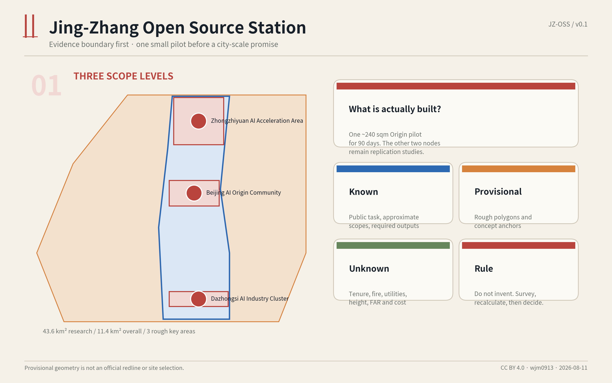
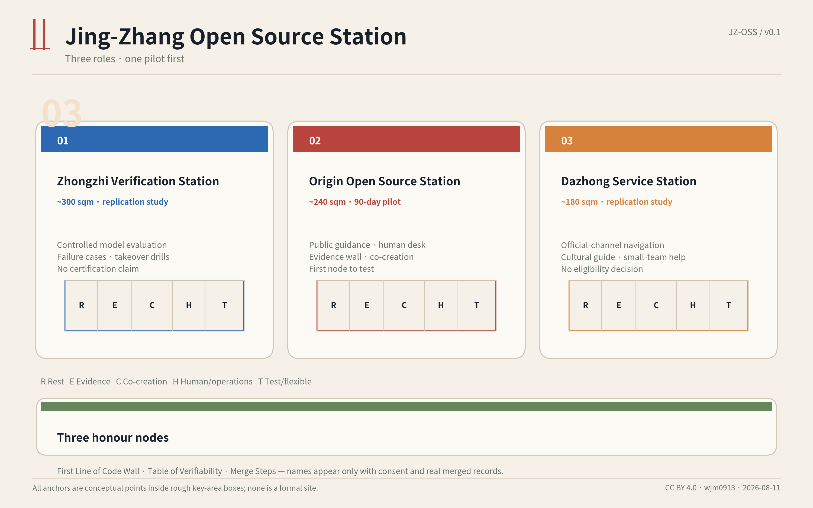
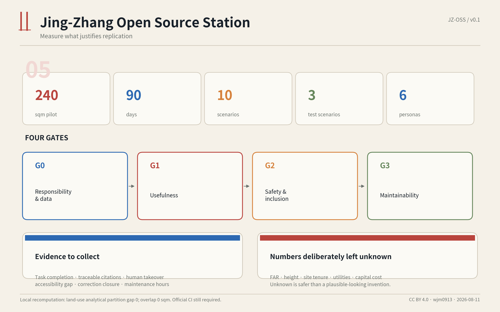
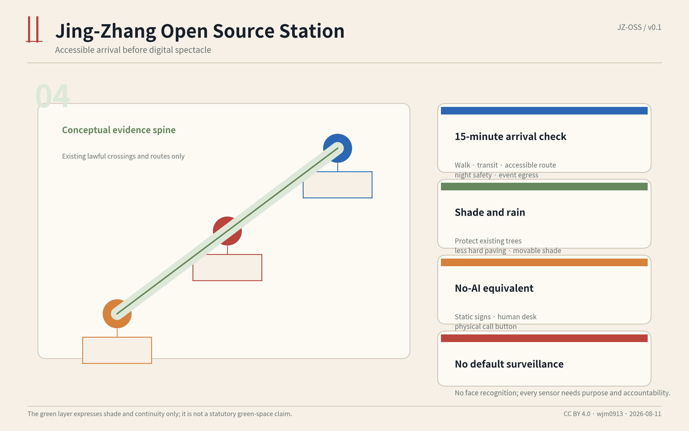
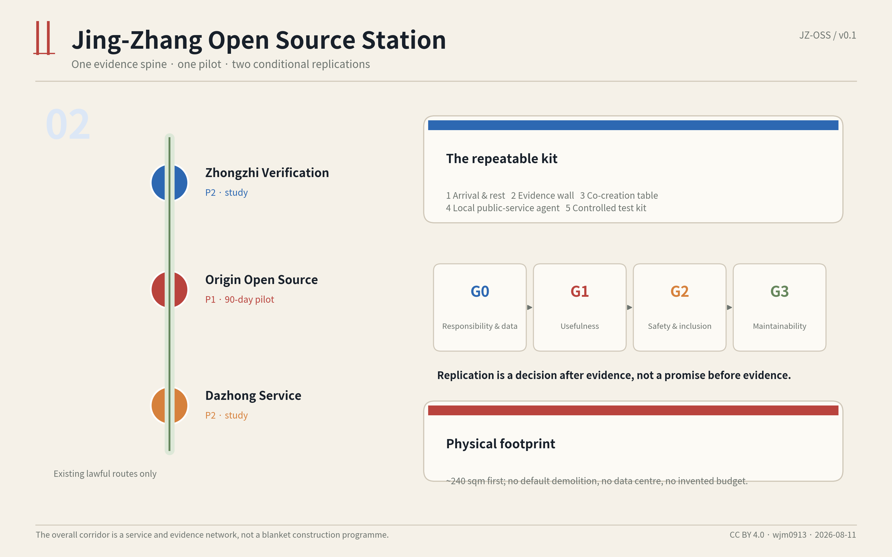

Start with one approximately 240 sqm station for 90 days. Replicate only after responsibility, usefulness, safety/inclusion and maintainability are evidenced.

The other two nodes are studies, not simultaneous construction promises.
Controlled testing, failure cases and takeover drills.
Public guidance, evidence wall, co-creation and human desk.
Official-channel navigation and cultural guidance.

Replication is a decision after evidence.
Responsibility & data
Usefulness
Safety & inclusion
Maintainability



Official public announcement, cleared agent taskbook, source registry and professional-standard snapshots.
Rough organizer-maintained polygons are used only for generation, display and intake self-check.
Formal site, tenure, fire, utilities, FAR, height, capital cost and implementation approvals.